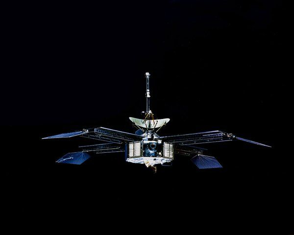
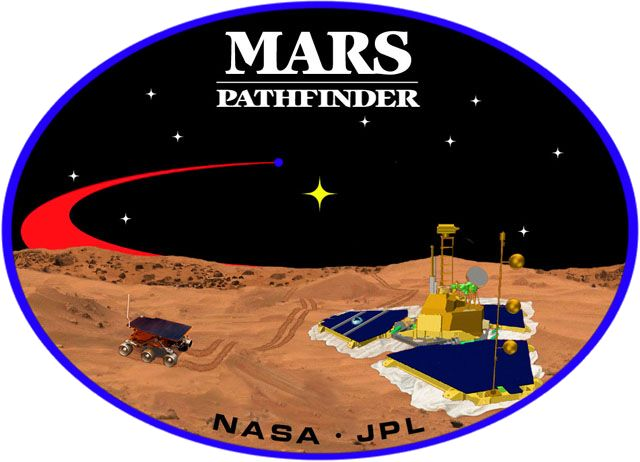
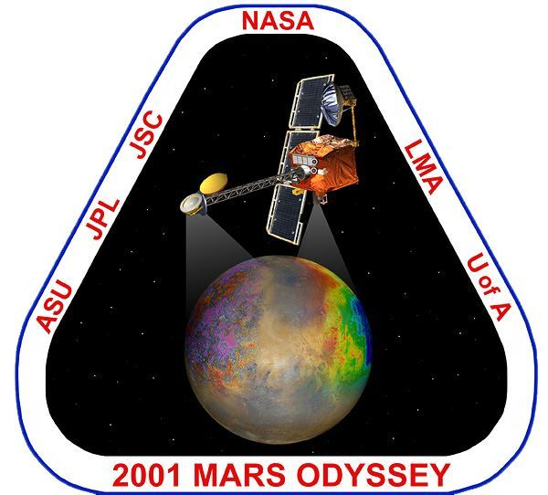
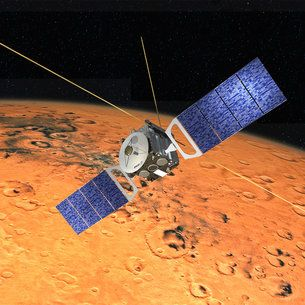
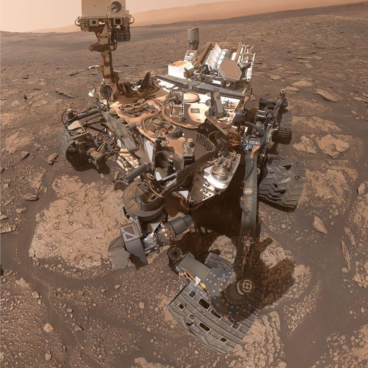
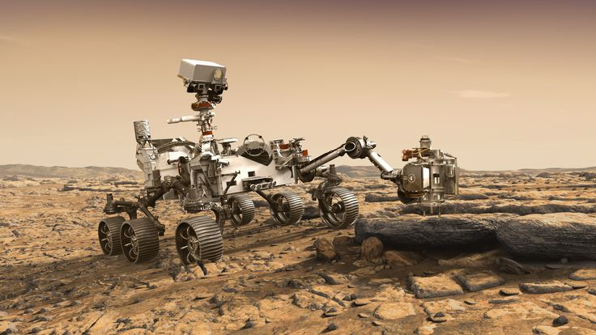
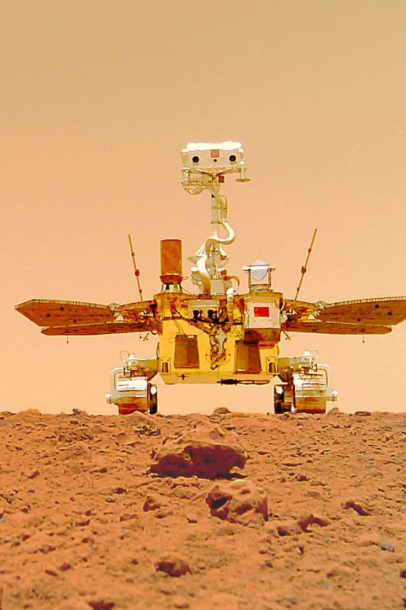
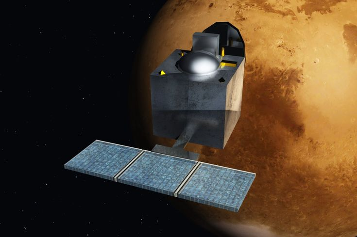
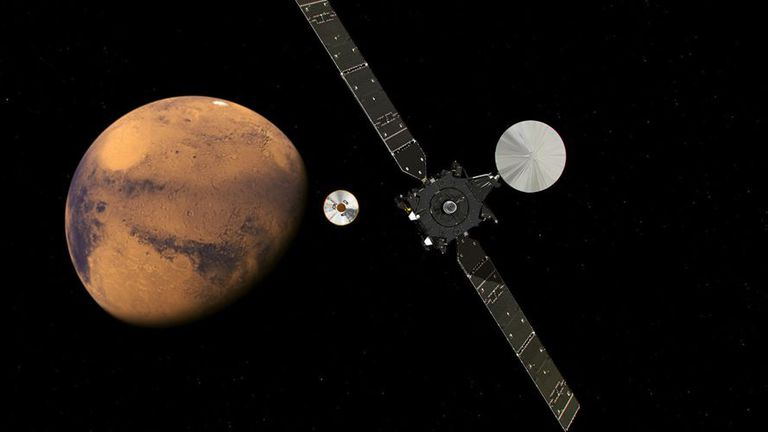

Voltar para a página inicial
Missões em Marte: a exploração do planeta vermelho
Desde o século XX, Marte tem sido o alvo de diversas missões espaciais, com o objetivo de entender sua geologia, clima, possibilidade de vida e viabilidade para futuras colonizações humanas. Essas missões têm sido realizadas por agências como a NASA (Estados Unidos), ESA (Europa), Roscosmos (Rússia), CNSA (China) e ISRO (Índia).
Marcos históricos das missões a Marte
-
Mariner 4 (1965) – NASA

- Primeira sonda a sobrevoar Marte com sucesso.
- Enviou as primeiras imagens de perto da superfície marciana.
- Mostrou um planeta árido e cheio de crateras, mudando expectativas sobre vida inteligente.
-
Viking 1 e 2 (1976) – NASA
- Primeiras sondas a pousar com sucesso em Marte.
- Realizaram experimentos biológicos e tiraram fotos em solo.
- Não encontraram sinais claros de vida, mas abriram caminho para pesquisas mais detalhadas.
-
Mars Pathfinder e Sojourner (1997) – NASA

- Primeiro rover (Sojourner) a operar em Marte.
- Demonstrou a viabilidade da mobilidade robótica em solo marciano.
-
Mars Odyssey (2001) – NASA

- Detectou grandes quantidades de gelo abaixo da superfície.
- Mapeou a distribuição de elementos químicos no solo.
-
Mars Express (2003) – ESA

- Missão europeia que orbita Marte até hoje.
- Identificou indícios de água congelada e estudou a atmosfera.
-
Spirit e Opportunity (2004) – NASA
 _NASA_missoes.jpeg)
- Rovers gêmeos com mobilidade aprimorada.
- Encontraram fortes evidências de que a água líquida existiu no passado de Marte.
-
Curiosity (2012 – presente) – NASA

- Rover avançado da missão Mars Science Laboratory.
- Estuda a habitabilidade passada de Marte, química do solo e radiação.
- Descobriu moléculas orgânicas complexas e possíveis condições para vida microbiana antiga.
-
InSight (2018 – 2022) – NASA
_NASA_Missoes.jpeg)
- Primeira missão dedicada ao estudo do interior de Marte.
- Detectou martemotos e investigou a estrutura interna do planeta.
-
Perseverance (2021 – presente) – NASA

- O rover mais moderno enviado até agora.
- Busca por bioassinaturas, coleta amostras que serão trazidas futuramente à Terra.
- Carrega o helicóptero Ingenuity, que realizou os primeiros voos em outro planeta.
-
Tianwen-1 e Zhurong (2021) – CNSA (China)

- Primeira missão chinesa a Marte com orbiter, lander e rover.
- O rover Zhurong explorou a Utopia Planitia, coletando dados sobre o solo e clima.
Outras missões notáveis
-
Mangalyaan (Mars Orbiter Mission) – ISRO, Índia (2014): Primeira missão interplanetária da Índia, com grande sucesso técnico e científico.

-
ExoMars – ESA e Roscosmos (em andamento): Programa europeu que visa estudar a possibilidade de vida e preparar o envio de um rover (Rosalind Franklin).

Objetivos das missões marcianas
- Estudar a geologia e a atmosfera de Marte.
- Investigar sinais de vida passada ou presente.
- Compreender o clima e sua evolução.
- Preparar a chegada de missões humanas nas próximas décadas.
As missões a Marte são passos fundamentais na busca por respostas sobre a existência de vida fora da Terra e sobre a capacidade da humanidade de viver em outros mundos.
Voltar para a página inicial